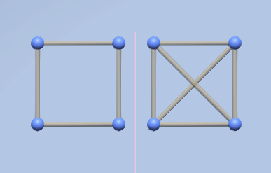
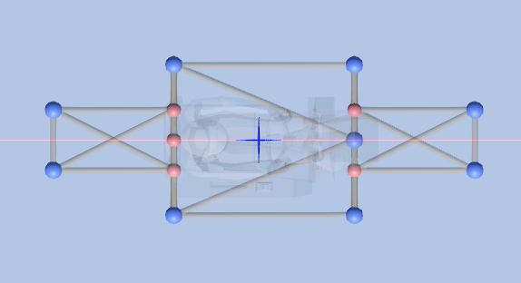
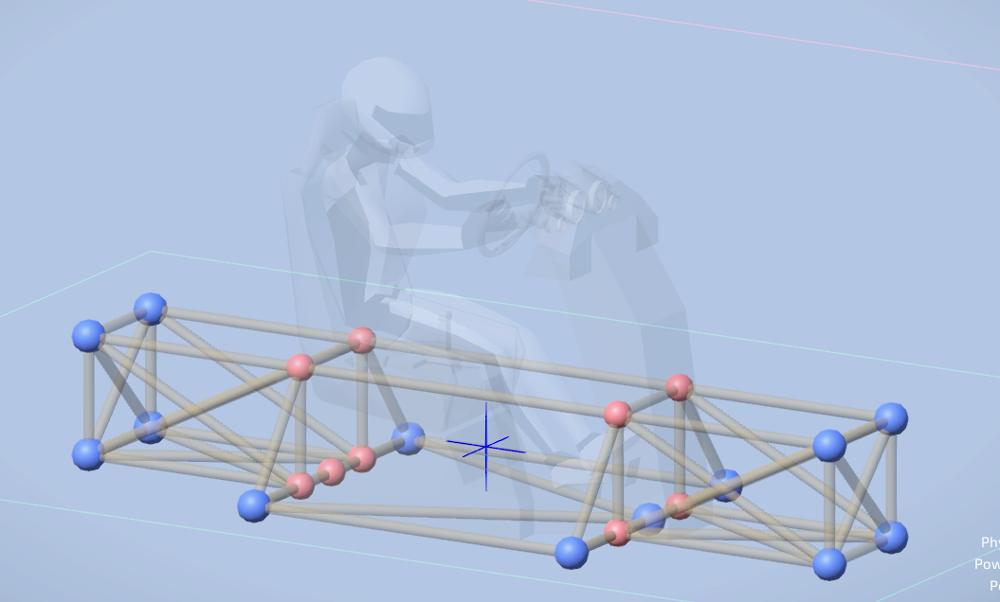
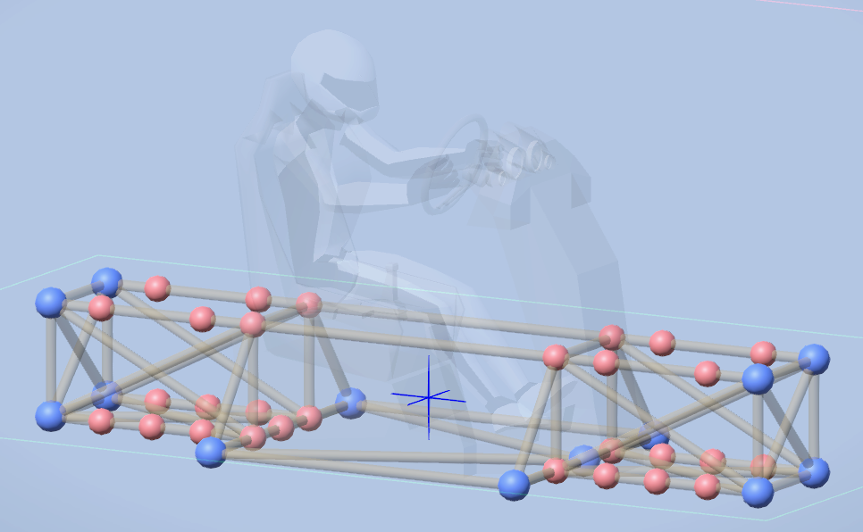

First off what actually makes a frame a frame and what makes that frame good? Well its a sandbox game so damn near anything is a frame, I am just going to go over important structual aspects and what a basic frame should look like. For this tutorial I will make a fairly modular frame that can support 4 wheels and double wishbone suspension.
I cannot stress this enough, every attachment in dream car builder is a free hinge! There is no rigid attachment points, you need to always do something known as crossbracing, which turns your weak square into a strong object. Below is a picture showing the difference, the square on the left will just collapse and the sqaure on the right will hold its shape.

First you need to square off the main seat and start thinking of where you want your wheels suspension engine etc. This will help out later. I normally start with a top down view and start with the outline, in the next step i will show how to make it rigid and strong.

Now with your frame outline build upwards and start considering vehicle size and wheel placement. If you dont know what I mean just check the image below, I started building upwards and added crossbracing.

Now finish up your frame and add things like midpoints and start morphing it to your cars shape, think about the suspension you want and how to tailor your frame to it. Mine is basic so I just added a few midpoints here and there.

Making Frames is super simple and the hardest part is just making it modular for other use cases. If you want to keep building this car check up on other pages where I have suspension and steering posted.